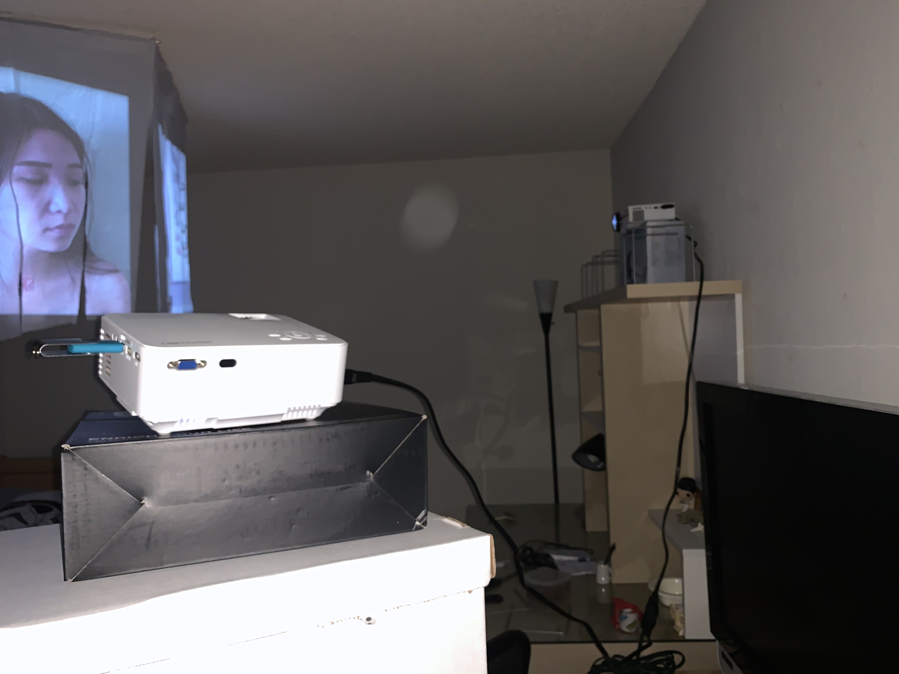
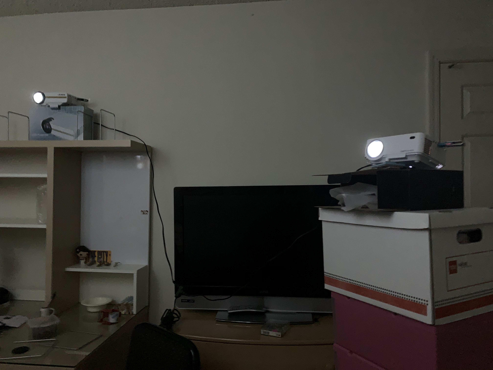
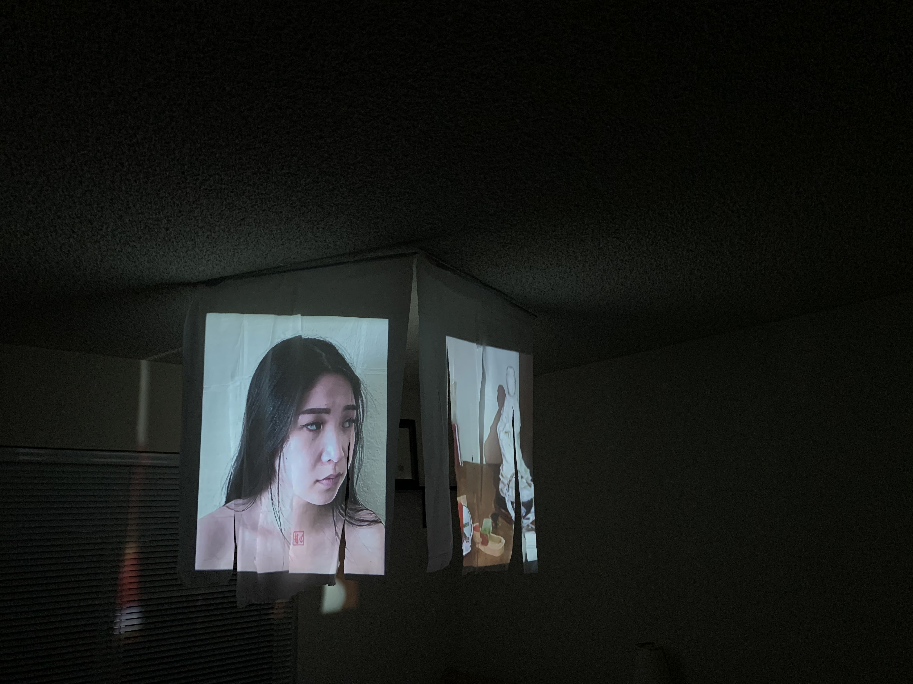
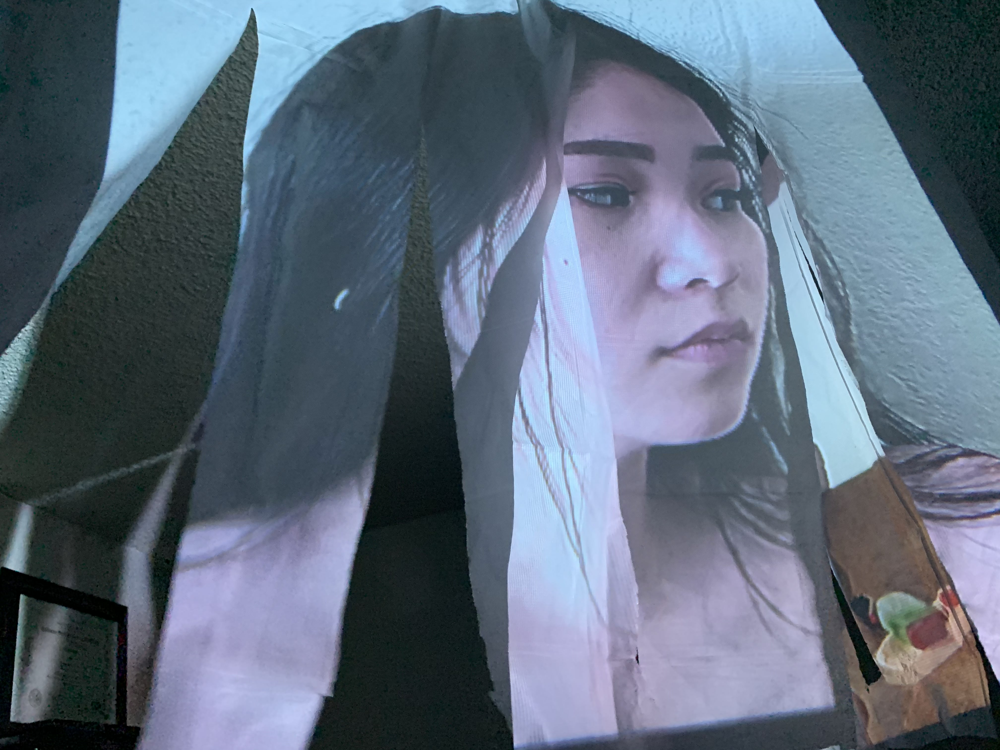

Heritage
Heritage is a projection mapping project displayed on a table cover that was cut up. I utilized two projectors and hung the table covers on my ceiling in order to project the videos. I decided to use table covers as they are thin and easy to cut, but also provide a good surface for projections. The projectors were set on boxes and shelves in order to reach the height of the table covers.
The left table cover was a video of me looking to my left. On my chest is a stamp of my Chinese name. The right table cover is of several different items related to my ethnicity such as Chinese scripture, red envelopes, and a statue of Guan Yin. The videos are meant to show how I am disconnected from my culture and how after my parents immigrated to America, I have lost the ability to speak Chinese. I think this issue is very relevant to many children of immigrants as most of my friends are unable to speak their Native language as well or had to learn it later in life. I chose to only display my chest and the stamp on my chest as it would show vulnerability in my character. I did not want to include music or sound because I think the quietness of the display made it more meaningful and heartful as nothing else would have distracted the viewer from what was on screen in front of them. It made everything more thought-provoking.
I decided on projection mapping versus having a virtual installation as I wanted to physically see and interact with my work. Being able to move the cut pieces of the table cloth was important to me as I thought it would bring more meaning to the work. This work is meant in a gallery space in a museum, and ideally, I would have loved to do this on a larger scale, however due to COVID-19, that was not possible. For my project, I did the largest scale that I was able to within the confines of my room. It was amazing seeing it come to life and watch the videos as they played out. I would have loved for more people to view my piece and walk through it.
Behind the Scenes
   Tools
Used